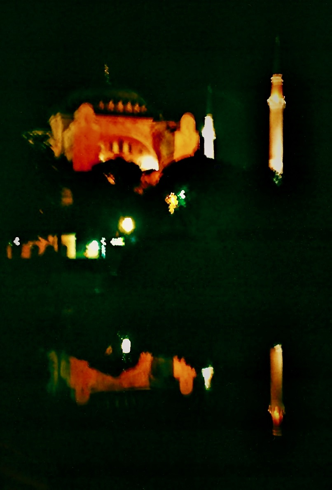
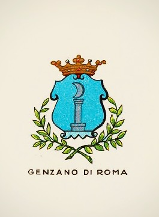
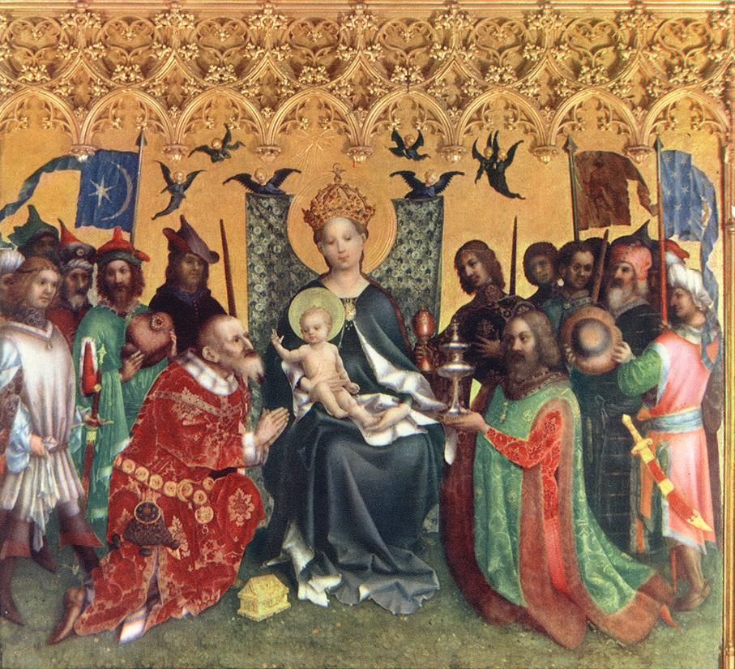
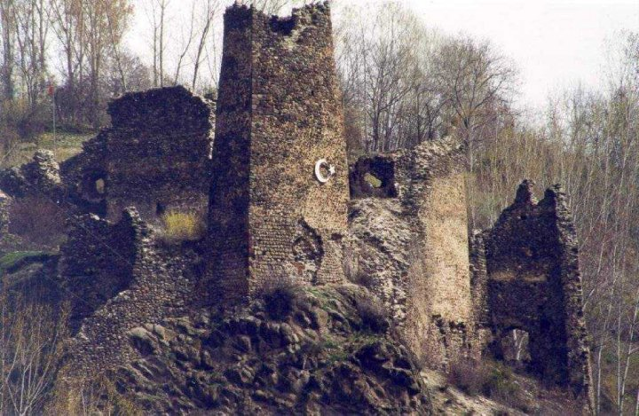

Spazi vuoti. La mezzaluna tra il Bosforo e il lago di Nemi

Lo spazio vuoto della storia e una santa mai esistita. La Turchia vista da Hagía Sophía. Ricorrenze del simbolo della mezzaluna tra l’Islam e Genzano di Roma. La storia sulle sponde del lago di Nemi. La generazione degli dei e i molti nomi della dea. La parte nascosta dell’Islam e gli infiniti Nomi di Dio. Principessa Bibesco: il tempio dell’idea. Corbin: lo specchio del mondo divino. Frazer nel bosco del sacerdote assassino. Le navi di Caracalla ieri e oggi. Lord Byron e l’esecuzione di un’adultera. Fourier, Flaubert, Pamuk: Istanbul capitale del mondo e tetra cloaca. Logos spermatikos, Paràcletos, Periklytos, Cabala e altre ragioni. Derrida: effetti di spettralità. Montale: il fantasma che ti salva. Pagels: vuoto fisico e indeterminazione della materia. Vuoti del presente e metropoli impossibili tra il Bosforo e i Castelli romani.
1. Santa Sapienza
Il Signore con la Sapienza fondò la Terra e consolidò le cose con l’Intelligenza. Per la sua Scienza gli Abissi si spalancano. (Proverbi 3:19-20)
Resta della nostra storia un puro spazio vuoto. Questo vuoto, a differenza di quanto possano aver considerato gli antichi e i moderni, non nega e non afferma il movimento, il pensiero e la compiutezza, e si impone alla nostra considerazione anche in base all’esperienza di un presente che oscilla continuamente tra potenzialità generativa di forme e perdita irreparabile di ogni eredità.
A Istanbul, questo vuoto può sorprenderci tra la loggia del muezzin e il luogo di incoronazione dei basileus, all’interno di Hagía Sophía, nome di una santa mai esistita. Edificio dalle proporzioni improbabili ma solide, è originariamente un tempio pagano dedicato alla Sapienza, che nell’Ebraismo, nel Cristianesimo e nell’Islam si configura quale aspetto della divinità.
L’edificio, consacrato come chiesa da Costanzo II nel quadro della riorganizzazione della nuova capitale imperiale nel 360, nel 404 viene incendiato durante gli scontri che coinvolsero Giovanni Crisostomo, patriarca della città costretto a deporre la carica. Riedificato da Teodosio II nel 415, nel 532 è un’altra volta dato alle fiamme durante la rivolta di Nika, che minaccia di travolgere Giustiniano accusato di eccessive spese militari. Di nuovo eretto nel 537 con il proposito di essere più splendido del Tempio di Salomone di Gerusalemme, rappresenta il più grande edificio sacro della cristianità, per lasciare dopo la presa ottomana il primato a Santa Maria Maggiore di Roma.
A detta delle leggende, nel 1453 Maometto II vi entra a cavallo e interrompe una messa che attende ancora di essere ripresa; a detta di altri, si prosterna al suo interno in direzione della Mecca e poi pronuncia un discorso in greco antico. Il sultano, figlio di una cristiana e collezionista di reliquie, conquista la città all’Islam accrescendone di fatto la ricchezza, e trasforma l’edificio in moschea. Nel 1934 Hagía Sophía diventa museo, per opera di Mustafa Kemal, padre laico della Turchia moderna, «turco come gli antenati» (Atatürk), che inoltre trasferisce la capitale ad Ankara.1 Nel revival ottomano truce, puritano e un po’ kitsch che ha seguito l’amara sbronza europeista, per iniziativa del presidente Erdogan l’edificio viene riconsegnato nel 2020 al culto islamico, rinnovando le lotte su suo significato e sua funzione.
Segnato dalle fiamme, dalle spade e dal sangue, l’edificio porta il santo nome della divina Sapienza, che precede la creazione di questo mondo e nel quale verrebbe a manifestazione permettendone intelligenza nonché governo (Sapienza 7:25ss). Tuttavia, così come il libro che le è dedicato non è stato scritto da Salomone e piuttosto sembra redatto nel I sec. d.C., questo nostro mondo non sembrerebbe affatto ordinato come sapienza comanda, e restano vane le ingiunzioni verso i potenti (6:4-8). Può fornire una traccia per decifrarne i travagli la Pistis Sophia, vangelo gnostico del III sec. dove la Sapienza stessa racconta come, per inseguire una luce solo apparente, precipita, per restare quindi imprigionata nella tenebra e nella materia che contribuisce a creare. Lei, che cerca verità, giustizia e amore, è odiata da potenze, dette Arconti, che propalano inganni.2 Se il primo testo è estraneo al canone ebraico, il secondo è considerato eretico dai cristianesimi ufficiali, mentre il mondo musulmano è generalmente estraneo ad ambedue: tuttavia, pur se dai margini delle ortodossie monoteiste, le loro concezioni implicano elementi costitutivi di quella che possiamo chiamare coscienza collettiva, cosi come è per la mitologia. Tali elementi riguardano anche la nostra contemporanea laicità e, concentrandoci perlopiù su questioni relative alla storia e alle idee, possiamo trovare il filo del discorso proprio nella sapienza. Che, in qualche modo, continua a precipitare.
Potremmo così, per sua e nostra salvazione, essere costretti a cercare questa sapienza quale ragione e soluzione di un mondo che è fiamme, spade e sangue anche tra coloro che si appellano a luci superiori. E, laddove una scintilla di sapienza è in ognuno, pur se spesso imperscrutabile, la sua stessa dispersione può ritrovare consistenza nel nostro risalirne le forme, ovunque si svolga il nostro andare. Saremo così sulle sponde del lago di Nemi e su quelle del Bosforo a rintracciarne l’eco, intenti a riscoprire storie di città e nomi di divinità e a contemplare i vuoti diventare pieni e viceversa.
2. Genzano e la Luna
Ciò che il Santo, egli sia benedetto, ha fatto sulla Terra, è a somiglianza di quanto è nel Firmamento: ogni cosa allude a quello che si trova nel mondo superno. (Zohar II:15b-16a)

La sapienza ama adornarsi di simboli che si rincorrono tra posti diversi e lontani in modi a volte apparentemente incomprensibili, sollecitando la nostra intelligenza a confrontare tra loro sistemi e credenze diverse. Questo accade anche nei luoghi del nostro vivere ordinario. Nella bandiera turca e nel simbolo dell’Islam, uno spazio vuoto si apre verso una stella da una mezzaluna crescente. Si apre ad uno spazio vuoto la mezzaluna calante sormontata da una corona nello stemma di Genzano, cittadina dei Castelli Romani. Spazi vuoti suscettibili di riempirsi di continuo di tensioni e significati.
Le differenze tra i simboli sono evidenti eppure la loro similiarità è netta, e tutto appare piuttosto enigmatico. Sviluppiamone le indicazioni vagliando, per quanto questi offrano molti vuoti, i dati della storia. L’ipotesi che a Genzano nel X sec. fosse esistito un piccolo insediamento saraceno non è suffragata in alcun modo, e non ci sono tracce da far risalire alle incursioni che nel IX sec. investono anche il territorio della vicina Lanuvio, e coinvolgono particolarmente Ostia e le chiese di S. Paolo e S. Pietro a Roma, sedimentandosi in maniera accertata in alcune zone della Valle dall’Aniene. Consideriamo inoltre che Genzano, in epoca antica parte del territorio appartenente alla gens Aricina, e che deriva, come gli altri paesi della zona, dal lento smembramento dell’immeso feudo tuscolano, è stata per lungo tempo circoscritta ad un remoto villaggio di contadini e pescatori, lontano dal vecchio tracciato della via Appia che corrisponde grossomodo all’odierna via dei Laghi.
L’antico borgo si sviluppa nella zona oggi chiamata Genzano Vecchio, sul ciglio settentrionale esterno del lago di Nemi; invece, quello conosciuto come Nemi, collocato sulla parte opposta del lago e ancora più appartato, per lungo tempo semplice massa e quindi costituito da fondi e casolari sparsi, gli è strettamente associato fino alla metà del XVI sec. Le due località sono unite tra loro da un percorso a mezzaluna che costeggia il lago, anticamente detto Speculum Dianae. Sul bosco che lo circonda era dedicato alla dea Diana Nemorense un santuario piuttosto articolato ed esteso. Nemi significa propriamente bosco, e nove alberi ripartiti su tre colli sono riportati sul suo stemma. Invece, origine e significato del nome Genzano, così come quella dello stemma, sono incerti e ancora dibattuti, scarne per quanto intricate le sue vicende, continuamente coinvolte nelle continue dispute, spesso anche piuttosto violente, che i nobili romani intrattenevano tra di loro e con i pontefici in carica.
Quanto sappiamo per certo proviene perlopiù dall’opera di Nicola Ratti,3 che va integrato con quanto possa chiarire contesto e dinamiche. Il Fundus Cynthianum è possedimento, per una donazione del 1153 effettuata dal pontefice Anastasio IV della Suburra e confermata nel 1183 da Lucio III Allucingoli, dell’Abbazia delle Tre Fontane sulla Laurentina, luogo del martirio di San Paolo, conosciuta anticamente con il nome di Acque Salvie e all’epoca tenuta dai Cistercensi. Tale ordine nasce dalla riforma di Cluny e ha già fornito contributi all’organizzazione degli ordini cavallereschi, in particolar modo con la Regola emanata da Bernardo di Chiaravalle per i Templari. Nel 1218 Onorio III Savelli decreta la demolizione di una torre abusiva eretta nel XII sec. dai Gandolfi che danno nome alla vicina Castel Gandolfo. Le prime citazioni del toponimo Genzani quali fundus e castrum risalgono alle bolle emanate nel 1255 da Alessandro IV de’ Conti di Segni, che si riferiscono alla costa montana e al castello, fondato in quell’anno dai Cistercensi e ricostruito prima dai Colonna e poi sostituito da palazzo Sforza Cesarini. La torre di avvistamento del XIII sec., detta Saracinesca, già parte della cerchia muraria del castello e ancora incastonata all’inizio del Corso Vecchio, prova perlopiù l’esigenza di difendersi dalle incursioni e non spiega né stemma né altro.

Anche per la particolare fragilità a cui è territorialmente esposto, Genzano e pertinenze restano coinvolte nelle instabilità del periodo in cui la sede del papato è presso Avignone. Nel 1378 l’antipapa Clemente VII di Ginevra lo attribuisce a Stefano Orsini di Marino, ma probabilmente il paese torna ai Cistercensi già l’anno successivo la battaglia di Marino, dove si fronteggiano mercenari francesi e italiani e prevalgono questi ultimi che parteggiano per Bonifacio IX Tomacelli. Nel 1393 Genzano viene invaso da Nicola Colonna di Palestrina ed è annessa ai domini di Lariano. Nel 1399 il Colonna, che già era stato scomunicato, fallisce una congiura ai danni del pontefice, e quindi Genzano passa per un breve periodo al suo sodale Buccio Savelli. Il governo dispotico degli occupanti provoca disordini, rivolte e forse anche l’incendio del 1402 e quindi, per volontà degli abitanti e intercessione del papa il paese, ora annesso alla castellania di Marino, dalla fine del 1399 inizia a tornare ai Cistercensi e al dominio diretto della Camera apostolica, con governatori Piero e Marino Passerello. Nel 1410 il nuovo pontefice Giovanni XXIII Cossa, in seguito reputato antipapa, consegna Genzano in locazione per un triennio a Giovanni Colonna in modo da stringere alleanze con la potente famiglia. Allo scadere del periodo, nel 1413 Antonello Savelli occupa Genzano e Giovanni Annibali si insedia a Nemi. Martino V Colonna, nominato papa nel 1417, riassocia le due località e le restituisce ai Cistercensi.
Minore precarietà si stabilisce a partire dal 1420 con il ripristino della sede papale a Roma. Nel 1423 i Cistercensi concedono a Giordano Colonna di Salerno, fratello del papa, l’affitto della località, che nel 1428 viene acquistata da Antonio, Prospero e Odoardo Colonna. I Colonna ne restano quindi stabilmente proprietari per mezzo secolo, e nel 1446 il card. Prospero Colonna inaugura gli interessi verso le navi che si sanno sepolte nel lago di Nemi, che suscitano interesse anche in Pio II Piccolomini. Nel 1479 Genzano e Nemi sono acquisite dal card. Guillame D’Estouteville e quindi passano ai suoi eredi, ai quali nel 1485 muove guerra Prospero Colonna, che occupa anche Frascati e attacca pure gli Orsini; nel 1486 Innocenzo VIII Cybo prima requisisce la proprietà per poi attribuirne, in base al diritto di retrovendita, pieno possesso al Colonna. Nel 1501 i principali esponenti della famiglia sono colpiti da scomunica e confisca dei beni da Alessandro VI Borgia, che conferisce Genzano alla figlia Lucrezia, che a sua volta ne nomina principe il figlio Rodrigo d’Este di due anni. Nel 1503 Giulio II della Rovere restituisce ai Colonna i loro beni. Nel 1514 a Nemi, cresciuta di consistenza e prossima a trovare autonomia, viene apografato da parte di Marcantonio I Colonna uno Statuto del periodo cistercense, modello dello Statuto di Frascati di un anno successivo. Il dominio della casata resta stabile per un altro sessantennio.
Questa lunga permanenza ha favorito l’ipotesi di associare lo stemma alla battaglia contro gli Ottomani svoltasi a Lepanto nel 1571, dove si dice che la flotta cristiana e quella turca si affrontarono assumendo rispettivamente le formazioni della croce e della mezzaluna, e nella quale si distingue come ammiraglio Marcantonio II Colonna, signore di Marino e inizialmente anche di Genzano e Nemi. Tuttavia, nel 1563 Colonna cede Genzano a Fabrizio Massimi, il quale l’anno successivo lo rivende a Giuliano Cesarini duca di Civitanova Marche, che era stato per breve periodo in possesso di Nemi. Ed è il Cesarini ad emanarne nel 1565 lo Statuto, ed è sotto i suoi discendenti e i loro eredi Sforza Cesarini che Genzano trova stabilità e sviluppo. Alla luce di tali passaggi, non ha alcun senso attribuire lo stemma della città alla commemorazione della pur celebre vittoria navale di Lepanto, che a Marino ispira la Fontana dei Mori.
Andiamo verso lo scioglimento delle trame cittadine. Colmando i vuoti che lo sviluppo del contesto ha determinato, Genzano Nuova viene costruita nel 1708 per volere di Livia Sforza Cesarini, che era stata, senza essere sottoposta a particolari vincoli di voto, conventuale presso la congregazione delle Oblate dei Sette Dolori; morti i fratelli, e opponendosi al disegno dinastico che impegnava la sorella minore Cleria con Filippo Colonna di Sonnino, contrae nel 1672 il matrimonio combinato dal card. Palazzo Altieri degli Albertoni con Federico Sforza di Santa Fiora, che prende il titolo di principe di Genzano soltanto nel 1697. L’evento infrange le consuetudini di un’epoca e gli interessi già decisi, e leggenda dice che il fantasma della donna resti tuttora ad aggirarsi per l’elegante palazzo di famiglia. E questo, ultimato nel 1730 su disegno di Ludovico Gregorini sul sito del vecchio castello, ha la singolare caratteristica di mantenere alla popolazione il diritto di attraversarne il portone, che sostituisce l’antica porta per il borgo di Genzano Vecchio, nascosto dietro il palazzo e la chiesa di Santa Maria della Cima, ultimata al posto dell’antica chiesa parrocchiale nel 1650.
Da parte sua, Livia Cesarini ha il merito di attuare il disegno di espansione urbanistica, ideato dal padre Giuliano III Cesarini e progettato dall’architetto Ludovico Gregorini, che si articola per triangolazioni su un tridente di strade principali, tra cui quella, popolarmente detta via Livia, sulla quale attualmente si svolge la tradizionale Infiorata del Corpus Domini, che scendendo da Santa Maria della Cima immette su via Appia nuova. In tale incrocio, troviamo oggi la fontana di San Sebastiano, eretta nel 1776 su disegno di Virginio Bracci, autore anche dei corpi centrali della Fontana di Trevi a Roma. Gli elementi simbolici del monumento sono costituiti da una colonna adornata di pampini e grappoli d’uva, sulla quale, sormontata da corona e croce, si eleva una sfera adornata da tre falci di Luna. Considerando i dati, la mezzaluna di Genzano non può trovare ascendenze né nelle vicende dei Colonna, né tantomeno in memorie saracene, e piuttosto riguarda la storia complessiva della località, che ha come riferimento principale il lago di Nemi.

Fornisce una traccia per venire a capo di questa intricata e finora irrisolta questione che, senza che nessuno se ne turbi troppo, resta come vero e proprio vuoto negli studi sul territorio, l’antica denominazione del territorio quale Fundus Cynthianum. Il Ratti associa il toponimo alla famiglia Gentia che sarebbe stata proprietaria del fondo e avrebbe avuto anche esponenti, invero piuttosto oscuri, in età repubblicana e imperiale, e così fa Antonio Nibby,4 peraltro nel 1827 testimone delle operazione di ricerca delle navi deposte sul fondo del lago. In tale quadro, rimane però inspiegabile la Luna dello stemma, che piuttosto trova una spiegazione convincente nell’ipotesi formulata nel rinascimento da Leandro Alberti,5 per cui il territorio deriva il suo nome da Cynthia Fanum. Cynthia indica la Luna, Fanum luogo o tempio sacro: il nome significa spazio sacro alla Luna, e la dea Diana Nemorense è venerata nel santuario che sorge tra il bosco e il lago. Diana protegge gli animali selvatici, custodisce fonti e torrenti, tutela le donne e i parti, dispensa la sovranità. Il filosofo e astronomo romano Nino Figulo la ricorda anche con il nome di Trivia, confermato da Alberti che tripartisce la figura in questo ordine: in cielo è Luna, in terra è Diana, agli inferi Ecate. Il culto procede fino alla messa al bando del paganesimo decretata nel 391 dall’imperatore Teodosio, ed è probabilmente per un protratto pregiudizio che, nell’omettere la considerazione del paganesimo sulla formazione del canone religioso cristiano e occidentale, ha altresì impedito di valutare l’influenza del nome Cynthia per indicare la Luna e le insegne dell’antica dea sulla denominazione della località. Da Cynthia deriva il nome Cinzia, che è adespota: come per Sophía, non è mai esistita una santa con questo nome. Tuttavia, ambedue sono forma della divinità.
Gli dei della mitologia possono essere visti come forze naturali che pervadono profondamente l’esistenza ed essi, suggerisce il filologo e latinista Walter F. Otto, non hanno nulla a che fare né con la tecnica né con la magia, non sono né frutto di invenzioni né vanno evocati e, per quanto sia difficile crederci seriamente, «possono soltanto essere sperimentati».6 In opposizione al positivismo scientista che immiserisce il mondo e anche alla psicologia del profondo quando personale e narcisista, e in sottile corrispondenza con la volontà di potenza di Nietzsche, Otto definisce teofania l’esperienza con cui il divino della natura viene incontro all’uomo, manifestandosi con una pienezza che conferisce forma all’esperienza umana. Tale considerazione del mito come «potenza ontologica» corrisponde ad un’esigenza di sacro a suo dire niente affatto rappresentata dai cristiani a lui contemporanei, che hanno portato a profondo divorzio culto religioso e quotidianità profana. La pretesa di possesso di una verità esclusiva ha condotto da una parte alla svalutazione di tutto ciò che non si comprendesse o che semplicemente fosse altro e, tuttavia, i primi cristiani avevano il sentore della realtà, quantomeno demonica, delle divinità della religione antica.
Otto, da parte sua appartiene alla cultura protestante, che ha sempre accusato di paganesimo l’attenzione nei confronti del mondo sensibile e della pluralità delle sue manifestazioni tipica del cattolicesimo, testimoniata peraltro anche da una ricca produzione artistica, che ha mantenuto ampia considerazione delle antiche divinità, Diana inclusa. Questo non riduce la forma cattolica ad una religione “di risulta”, ma ne indica una peculiarità, da comprendere nella tensione, oggi messa particolarmente in crisi, per cui il divino si carica ed è partecipe senza riserve delle contraddizioni umane. Rispetto a ciò, le pur raffinate riflessioni di Otto e la decisiva formulazione dell’idea di mantenere un nesso tra le forme del divino e l’esperienza quotidiana, non offrono argomenti. Ne offrono però di decisivi rispetto a come il comportamento e l’agire per l’autentica religiosità pagana, a detta di Plotino che rinvigorisce il sentire greco, abbiano verità in sé e siano guidati da «spavento accompagnato da piacere» piuttosto che da volontà e obbedienza come prescrive Agostino. L’idea di «amore onnipotente» che Otto riscontra nella devozione pagana non viene raccolta tanto dal Cristianesimo quanto dall’Islam, che elabora la tensione monoteista del Dio geloso ebraico e del Dio di amore cristiano nell’assoluta unità e unitarietà di un Dio che conosce impersonalmente e che l’uomo è libero di servire in quanto tale nelle molteplicità delle manifestazioni del reale, cosi come si stabilisce stretto rapporto tra culto e quotidianità.
Quanto a noi oggi serve, in un occidente non più cristiano che ha svuotato di senso ogni trascendenza per rendere la coscienza uno spazio vuoto pronto a colmarsi di qualsiasi spazzatura, è collegare tra loro le forme storiche del sacro per tendere ad una conoscenza capace di accogliere la pluralità dell’esistenza e connetterla con la nostra unità psichica, cautelandosi altresì da rischi di infestazione e psicosi che possono essere coinvolti nel neopaganesimo da mercatino quanto negli integralismi tossici, ambedue fenomeni che appartengono al nostro presente. Occorre quindi considerare che quanto ci separa dagli antichi è laddove il nostro universo è sopratutto mentale e che, per essere conosciute e comprese nella loro consistenza, divinità e loro nomi richiedono, per quanto parziale, anche una sistematica. In tale sistematica il tre, che abbiamo già visto riguardare la stessa Diana e che riguarda anche altre divinità del politeismo, esprime una relazione dinamica di generazione e di sintesi che si rinnova su ogni piano della manifestazione. Tale relazione non è limitata all’ordine biologico di padre-madre-figlio, né inerisce quelle che sono considerate ipostasi, o persone, della Trinità cristiana di Padre, Figlio e Spirito Santo, né tantomeno concerne l’unità del non manifestato su cui si concentra il monoteismo islamico. Ed è soprattutto la considerazione della Cabala, il cui testo fondamentale è lo Zohar,7 che suddivide le diverse qualità dell’esistenza nella serie delle Sephirot mantenendo l’indeterminatezza dell’Ain Sof Aur da cui tutto procede, a permettere l’atteggiamento ad un tempo di apertura e rigore con cui il nostro andare, ovunque si svolga, possa essere in grado di riscattare la dispersa Sapienza.
Cerchiamo le linee guida essenziali e le genealogie nella selva degli dei greci che, a detta di Esiodo,8 nascono tutti da Chaos, che significativamente indica il vuoto primordiale, la cui reciproca attrazione con Gaia «dall’ampio petto», potenza divina della Terra, è sostenuta quale fondamento dell’universo da Eros. Gaia si unisce ad Urano, personificazione del Cielo stellato, generando Crono, titano del tempo e della fertilità, e Rea, forza creatrice e distruttrice della natura, grande madre degli dei. Rea per evirare Crono intenzionato a uccidere i loro figli fornisce loro una «gran falce», che ha un’altra volta forma di mezzaluna. Da Rea e Crono nascono, tra gli altri, Hera, protettrice del parto, del matrimonio e della fedeltà coniugale, e il suo consorte Zeus, dio del cielo e del tuono, che spodesta Crono per diventare padre di un’altra generazione di dei. Hera, a causa dei tradimenti del marito, diventa nemica del genere umano. Da Zeus e Latona, dea della maternità, della modestia e delle tenebre notturne ma anche della luce del giorno, nascono, nell’isola di Delo sul monte Cinto (da cui in latino Cynthium e Cynthia), Apollo, che traina il carro del Sole e governa profezia, scienza e intelletto, e sua sorella gemella Artemide, alla quale sono sacri il fuoco, la caccia e i nascituri. Modello di ierogamie a venire, nozze sacre alle quali si ispirerà anche l’imperatore romano.

Attributo di Artemide è l’arco, che ha ha un’altra volta ancora forma di mezzaluna. In epoca più tarda, seguendo la tradizionale ripartizione tra fase crescente propizia e fase calante nefasta, Artemide viene identificata con la Luna crescente, e la Luna calante trova forma in Ecate, che governa gli incroci, i demoni e l’oscurità. Nel mondo latino, soprattutto durante il sincretismo imperiale, il nome di Artemide diventa quindi perlopiù quello di Diana. Diana è casta, solitaria e irascibile, e nel suo aspetto infero e ctonio è conosciuta appunto anche come Trivia, da parte sua oscura, magica e mortifera, e inoltre celeste, terrena e marina. Il Santuario di Diana Nemorense comprendeva il tempio e le statue, un portico dorico con colonne intonacate in rosso e un altro con colonne di peperino grigio scuro, ambienti per i sacerdoti e alloggi per i pellegrini, celle donarie per le lustrazioni, bagni idroterapici e un teatro.
Di grande fortuna nelle letteratura e nelle arti, da Bernini a Stravinskij-Gide, sono altri appellativi di Ecate, detta anche Kore, cioè Persefone, in latino Proserpina, legata alla rinascita della vegetazione dopo i rigori invernali. È figlia della Terra, che in Grecia prende il nome di Cerere e a Roma quello di Demetra, ed è sposa di Ade, nel mondo latino chiamato Plutone, dio degli inferi e signore dell’oltretomba, che la rilascia a primavera. Studiando il mito quale sistema di conoscenza, Karòli Kereny ricorda come la tripartizione della dea era destinata tanto a lasciar posto tanto al cosmo ordinato di Zeus quanto a mantenere una sfera polimorfa infera; da parte sua, il legame del rifiorire della Terra dal mondo infero e dopo l’inverno, indicato dai Misteri Eleusini che ineriscono il mito di Proserpina, rappresenta un destino immortale che oltrepassa l’umano. Indagando i modelli universali inscritti negli aspetti impersonali della psiche, Carl G. Jung annota come la relazione madre e figlia tra Demetra-Proserpina rappresenti un ordine matriarcale che arriva a escluderlo, mentre nel femminile archetipo di Demetra l’uomo trova la propria esperienza più importante e decisiva. Le componenti oscure di questa vicenda alludono agli aspetti inconsci che l’uomo dotato di una «personalità sopraordinata» è chiamato a integrare.9
Possiamo anche vedere in queste dee e nei loro nomi, il cui elenco potrebbe continuare indefinitivamente, il precipitare della Sapienza nel mondo materiale e il suo prodursi in una pluralità di manifestazioni. Funzioni e forme di un’unica idea che precede le religioni indoeropee, si differenzia e si disperde in esse come falda fertile, viaggiando tra il maschile e il femminile, la vita e la morte, gli uomini e gli dei, per venir quindi elaborata nel quadro delle rivelazioni monoteiste in forme femminili della divinità non sempre immediatamente riconoscibili. Vederla nuda, ci ricorda Giordano Bruno nel riproporci il mito di Atteone, può rendere preda il più scaltro dei cacciatori: eppure, ella è l’ombra che suo fratello Apollo, sublime e divina Luce, proietta nella materia, ed è proprio questo ad esortaci a catturare con l’intelletto la Sapienza divina e ammirarne la Bellezza.10
La presenza di Diana si mantiene costante nell’arte e ogni epoca le porta tributo; in epoca barocca, nel quadro del Guercino, accompagnata da un levriero, Diana si volta a vedere il suo amante Endimione addormentato. Rappresenta un qualcosa che abita costantemente la nostra psiche e ne tenta il risveglio così come può farlo la pura recettività, quella che Husserl individuerà quale il momento verginale della conoscenza che precede e fonda quanto chiamiamo logica, caratterizzando l’atto di un pensiero che tende inevitabilmente a riempirsi.11 Un vuoto che si fa pieno il cui cammino non può fermarsi qui. Ad ogni modo, a Diana si riferisce ancora la mezzaluna calante rappresentata sullo stemma della città di Genzano.

3. Il volto nascosto dell’Islam
Non vedi che Dio conosce quel che è nei Cieli e sulla Terra? (Corano 58:7)

La somiglianza tra la mezzaluna di Genzano e quella dell’Islam suggerisce come l’estrema lontananza possa accogliere una continuità sotterranea. E, in modi laterali, un aspetto nascosto dell’Islam può rivelarsi nei riflessi del lago, uno dei luoghi storici della latinità, così come aspetti essenziali della cultura greca e romana arrivano a riflettersi nelle increspature del Bosforo, sul quale si distende quella che fu la capitale dell’impero musulmano.
La città che oggi chiamiamo Istanbul ed è stata conosciuta pure come Costantinopoli e prima ancora come Bizantyon, nome poi recuperato insieme alla lingua greca al tempo di Eraclio, viene fondata su suggerimento dell’oracolo di Delfi nell’immenso porto naturale che fronteggia la città di Calcedonia, il cui nome “città dei ciechi” indica proprio il non essersi avveduti i suoi abitanti di tale opportunità. Occupata dai Turchi già in epoca bizantina, oggi si chiama Kadiköy ed è nella parte asiatica del sistema metropolitano stanbulino, che il Bosforo separa dalle due parti europee a loro volta separate dal Corno d’Oro. Il culto della dea e della Luna viene introdotto nelle forme di Hera da coloni provenienti da Argo, si specifica in epoca classica in quelle di Artemide, in seguito sembra mantenersi negli aspetti di Ecate. La città, così come la dea che un tempo ne fu protettrice, non è una, non è due: è tre.
Un simbolo è sempre plurale e nel suo formularsi storia e leggenda si confondono; se esprime il contenuto a cui rimanda, può trovare significati diversi nei differenti contesti. L’universalità è alla base del simbolismo, ma ogni simbolo si pone sempre su piani delimitati, convenzionati in base a presupposti e credenze da esplicitare di continuo. Troviamo il simbolo della mezzaluna utilizzato come segno di ringraziamento laddove la città di Bisanzio scampa all’assedio notturno di Filippo II di Macedonia grazie alla luce di una Luna crescente. La mezzaluna coinvolge anche il Cristianesimo e nel 330 Costantino, dedicando la città a Maria Vergine, aggiunge il simbolo mariano della stella alla falce di Luna della dea ormai spodestata, e questo corrisponde all’ascesa antropologica comportata dalla sua figura: Maria non è una dea scesa tra gli uomini, ma una donna umana chiamata ad accogliere il Dio vivente (Vangelo di Luca 1, 26 ss.). La mezzaluna è nelle monete emesse da Kavad I presso la Persia del V sec. d.C.; l’impero sasanide è in declino, e soltanto l’abilità del suo sovrano lo sostiene.12 L’uso del simbolo da parte dell’impero Bizantino è riscontrabile nella pittura, e ne L’adorazione dei Re Magi (1440-1442) di Stephan Lochner i suoi rappresentanti lo riportano sui loro stemmi.
Da parte sua Maometto, quando conquista la Mecca dai Coreisciti, tribù pagana fondata dal suo bisnonno e alla quale egli apparteneva direttamente tramite il clan Banu Hashim, mantiene inizialmente quale unica immagine di divinità al suo interno quella di Maria con Gesù.13 Per il sufismo, come rimarca Titus Burckhardt, il profeta dell’Islam assomma in sé i caratteri delle due figure, stabilendo un’equivalenza tra la Maternità e la mezzaluna, affini in quanto manifestazioni della Luce divina che interrompe l’oscurità della vita bruta soddisfando così il desiderio di Dio di essere conosciuto. Maometto rappresenta il ripristino dell’Uomo universale (al-Insān al-Kāmil), che assorbe le qualità che descrivono positivamente la divinità per essenza descrivibile soltanto attraverso negazioni. L’Uomo universale è in forma primordiale in Adamo, che per l’Islam non contrae peccato originale (Corano 53:38), e tutte le rivelazioni ne portano traccia, avendo ognuna con raggi diversi centro nel divino.14

Le ventotto lettere dell’alfabeto arabo sembrano corrispondere ai ventotto giorni del mese lunare, e ventotto sono i profeti (nabī) che precedono Maometto citati nel Corano, supponendo che tre di loro non abbiano menzione esplicita del nome così come esistono tre giorni di Luna nuova in cui l’astro non è visibile. In arabo la somma dei numeri che compongono la parola Hilal (mezzaluna nel senso di “crescente lunare”) è 66, che corrisponde allo stesso valore numerico del divino nome Allah.15 In arabo la calligrafia del nome Muhammad trova l’aspetto di una stella a cinque punte. A detta del sufi Rumi «il Profeta riflette Dio come la Luna riflette la luce del Sole». La Luna (Qamar) è creata da Dio (Corano 10:15), al quale ella rende omaggio con il creato tutto (22:18), permettendo all’uomo il calcolo dei giorni (55:4) e la regolazione della preghiera.16 La purificazione delle intenzioni, ciò a cui sostanzialmente tende la Sharia, che lega strettamente il sacro alla quotidianità, consente al Sole di riflettersi nella Luna e quindi di riconoscere il Vero (91:1-15). Un legame tra Cielo e Terra è rintracciabile anche nelle assi che compongono la croce cristiana e nei triangoli che costituiscono l’esagramma ebraico.
Alcuni non esitano a far appartenere la mezzaluna ai Turchi, di origine altaica e divisi in varie tribù, sin dai tempi dell’antica popolazione dei Göktürk. I popoli turchi si convertono all’Islam nel X sec. ed esprimono una cultura fortemente ellenizzata, arrivando persino a rivendicare discendenze da Teucro di Troia.17 La mezzaluna viene utilizzata come stendardo dopo la conquista dell’Armenia del 1064 dal sultano selgiuchide Ap Arslan, che nel 1071 a Manzicerta cattura l’imperatore bizantino Romano IV Diogene.
Osman I agli inizi del XV sec. fonda la dinastia ottomana, e riceve in sogno la visione di una mezzaluna che sorge dal petto del sufi Edebali, padre di sua moglie, per quindi stagliarsi sopra il mondo. Un riflesso della Luna che nasconde una stella appare nel 1448 durante la battaglia di Kosovo nelle pozze di sangue dei cristiani sconfitti dagli Ottomani. Nel 1453 nella notte della caduta di Costantinopoli la mezzaluna e la stella sono viste tra le mani di Maometto II. L’impero assume il simbolo riconoscendosi nella conquista di Costantinopoli, predetta da un Hadit del profeta Maometto. Ay Yıldız è inizialmente una falce di Luna su campo verde, cambiato in rosso nel 1793 da Selim III; la stella a cinque punte viene introdotta nel 1844. Soltanto dal XX sec. la mezzaluna crescente diventa simbolo dell’Islam tutto.18
Se la formulazione del simbolo risulta lenta e complessa, rimescola le carte sui riferimenti la principessa Marthe Lucile Bibesco. La grandiosità di Hagía Sophía è capace di annientare una persona così come può farlo il Cielo: «prodigiosa basilica non dedicata al culto» e «santuario del Dio assente», è lontana dal Cristianesimo quanto dall’Islam, e rappresenta l’«enorme tempio dell’Idea». L’evocazione di tale idea è fatta accompagnare dalla scrittrice e storica rumena a leggende per cui l’influenza occulta di Ecate mai abbandonò la città: le streghe la celebravano segretamente nella notte di San Giorgio, e l’imperatrice Teodora, reputata la cristianissima consorte di Giustiniano, la implorava per mantenere i propri poteri di seduzione.19 Vada come vada, chiamiamola pure come ci pare, sui cieli di Istanbul sempre una Luna splende.
Procopio di Cesarea nella Storia segreta,20 che contiene ogni sorta di invettiva contro Giustiniano e consorte, ci informa invece che l’imperatrice, «famosa meretrice», era cristiana monofisita. Per i monofisiti Gesù ha unica natura, tanto divina quanto umana, in maniera difforme dalla prescrizioni stabilite nel 451 dal Concilio di Calcedonia (l’antica “terra dei ciechi” e l’attuale Kadiköy già ricordata). Con la conquista musulmana di Costantinopoli molti dei monofisiti, a lungo perseguitati, si convertono all’Islam. A modo suo, anche questo fiume porta allo stesso mare: ogni prospettiva di questa straordinaria città, tutte le diverse tradizioni che ha accolto, sembrano convergere in una visione tanto sfaccetta quanto unitaria.
Dove il rigoroso monoteismo islamico non consente divinità associate di nessun tipo, unità e molteplicità di Dio si manifestano tramite i piani dell’essere e attraverso l’uomo nei Nomi divini, generalmente considerati in numero di 99, infiniti a detta del filosofo e sufi Ibn Arabi, da considerarsi quali ipostasi o dimensioni della divinità attraverso cui essa si rende conoscibile.21 Tali Nomi si dividono, seguendo distinzioni già proprie al pensiero greco, in attributi di essenza (forma universale, tí ên eînai) e di sostanza (fondamento ontologico, ousia) e laddove tra i primi è la Sapienza e tra i secondi il Creatore, Dio muove ed è testimone di ogni cosa. Dio è assoluta trascendenza, non è né essenza né sostanza, e oltre a non sussistere in lui dualismi o trinità, si svuota anche dagli attributi antropomorfi e quindi non è né uomo né donna.

Se la riduzione di Allah a divinità lunare non trova pertinenza nella sua articolazione concettuale, esistono ad ogni modo aspetti femminili della divinità che trovano spazio in maniera eminente nel Nome divino Rahîm, il Misericordioso, riportato nell’esordio di tutte le Sure (eccettuata la 9, probabilmente per un frazionamento), che indica qualità di compassione verso la creatura e quindi le viscere, chiamate anche cuore. Il cardinal Ravasi ricorda che l’arabo Rahîm deriva dall’ebraico rahamîm, che ricorre in Mosé con «il Signore Dio misericordioso e pietoso, lento all’ira e ricco di amore e di fedeltà» (Esodo 34: 6) e in Davide dove «il Signore prova tenerezza verso quelli che lo temono» (Salmo 103:13). Inoltre, ha equivalenze con il verbo greco splanchnismos il cui senso più pregno è «avere viscere di tenerezza misericordiosa», come accade a Cristo incrociando il funerale del figlio unico di una vedova (Luca 7:13), davanti a un lebbroso (Marco 1:14), di fronte ad una folla affamata (Marco 6:34), e come accade al buon Samaritano e al padre del figliol prodigo (Luca 10:33; 15:20).22
Presso l’Islam sussiste il concetto marcatamente femminile di Madre del Libro, archetipo del Corano custodito in Cielo che precede la lingua stessa, libro-matrice concepibile quale attributo di Dio che partorisce il reale in maniera conforme esclusivamente al suo volere: «Allah cancella quello che vuole e conferma quello che vuole. È presso di Lui la Madre del Libro» (Corano 13:39). Ibn Arabi considera che, se «noi siamo di Dio e a Lui ritorniamo» (2:156), pur non avendo figli e non essendo né padre né madre (19:35), Dio partorisce la Terra che, riflettendo nella sua pienezza la presenza divina, è celebrata quale fonte creativa.23 Dall’argilla, elemento marcatamente femminile è fatto l’uomo da cui poi è tratta la donna (15:9): come è rimarcato anche dalla Cabala (Zohar II:55a) seguendo la Tōrāh (Genesi 3:23), l’autentico genere umano è nell’unione tra l’uomo e la donna, così come ritiene anche il Cristianesimo. In maniera difforme dal rigorismo fondamentalista e dal perpetuarsi delle false opposizioni che caratterizzano gli integralismi, e senza ridursi al livellamento delle diversità e alla mistificatoria confusione tra i generi ai quali ha condotto il progressismo, nell’Islam forme maschili e femminili della divinità indicano un percorso di perfezionamento umano di assimilazione e integrazione. Ogni tensione è riportata ad Unità, ogni cosa dispersa si riconduce ad Uno. Accendere una luce nell’oscurità che sorvegli l’ombra e dissolva la tenebra: la lezione della mezzaluna sembrerebbe essere questa. Con ogni evidenza, non basta fare riferimento nel simbolo o crederci in maniera irriflessa per farne esperienza, e infatti l’ideologia islamista sembrerebbe, in maniera affine all’ebraismo sionista, piuttosto chiusa in un’oscurantista ripetizione dell’identico, secondo una specie di programmazione monodirezionale per cui le Scritture vengono assunte come fossero una specie di manualetto scemo, e con un’attitudine che non sa in nessun modo rispondere all’appello di nessun nome.
In questo mondo in troppi parlano a nome di qualcosa che nemmeno li rappresenta, pretendendo persino di prendere voce per tutti. Vanno addirittura contro se stessi e quanto davvero amano, servi di assiomi indiscutibili ma non compresi e spesso anche soltanto di semplici opinioni, religiose o politiche, istituzionali o plebee che siano, contribuendo così a distruggere il mondo stesso nonché la propria e l’altrui esistenza. La cosa più terribile sono quelli che restano sempre all’interno del recinto per loro deciso, a volte contrastandosi ferocemente, ma senza mai metterne in discussione i presupposti, rafforzando quanto li opprime persino quando credono di opporvisi. Quanto serve, quanto davvero resta, in questa guerra che ovunque infuria, è trovare lo spazio che permetta di affermare intuizioni personali profonde e autorevoli, e quindi di elaborare idee dotate di universalità e necessità capaci di imporsi in virtù propria, rompendo così le convinzioni imposte nonché le false opposizioni. Alimentare una capacità di comprensione dotata di propria forza, in rapporto vivo con la storia e il presente, il pensiero e la realtà, affermare una comprensione autenticamente in diritto di sussistere di fronte a quanto resta degli uomini e a quanto davvero possa essere la divinità, e così permettere di ritrovare un futuro lì dove sembra esserci soltanto una ferita.
Cio che può portare vera e splendida luce in tenebre apparentemente senza scampo è nella rinnovata alleanza di ognuno con quella che in ogni tradizione ha portato il nome o il segno della Sapienza. Suggerisce il filosofo Henry Corbin, rispondendo a Jung e corrispondendo con il suo ecumenismo gnostico e il concetto di immaginale all’idea degli archetipi quali funzioni trascendentali dell’esperienza, che ciò è possibile anche nello scoprire la sapienza quale alleanza tra umano e divino capace di agire attraverso un piano di individuazione rigorosamente personale e non trasmissibile, rendendo così proprio il nostro mondo travagliato «immagine di questa Sophia divina eterna» e «specchio del mondo divino». Nel considerare le divinità femminili e gli aspetti femminili della divinità, più si procede e più si chiarisce che non necessariamente esse hanno carattere benevolo o compiuto di per sé, aiutando così a comprendere quanto sia ormai superato quel femminismo arrivato a impuntarsi su patriarcati immaginari per non riconoscere il proprio petulante paternalismo, e che da tempo «non fa altro che riconoscere definitivamente la preponderanza e il primato dei valori maschili, sia pure come caricatura». Così, il regno della Sapienza divina può piuttosto tralucere nelle possibilità di «un mondo in cui l’amore dovrebbe procedere ogni conoscenza e in cui il senso della morte non sarebbe che la nostalgia della resurrezione».24 Questo mondo sempre possibile è anche quello dove la medesima Luna vagabonda che ispirò gli antichi ancora si riflette sulle acque del Bosforo e del lago di Nemi facendo scintillare come lame gli orizzonti della metropoli e dei boschi. La stessa Luna continua a illuminare Hagía Sophía senza dare troppa importanza alla sua destinazione di culto: la stessa Luna che sto guardando io, e che ora è sopra voi.

4. Memorie interrotte
La mia Luce è sparita come alito, e io sono diventata Materia. (Pistis Sophia 39:5)
Nei boschi sulle sponde del lago di Nemi, presso il Santuario di Diana, risplendeva nel riflesso della Luna la lama di un coltello, brandito da uno schiavo fuggitivo. In remote notti d’estate, esattamente il 13 agosto, egli avrebbe colto un ramo d’oro da un albero sacro che nessuno poteva spezzare, e uccidendo il proprio predecessore sarebbe stato nominato Re del Bosco. James Frazer25 per Il ramo d’oro si ispira all’omonimo quadro di William Turner e ricorda che dobbiamo ad Oreste figlio di Agamennone re di Micene la figura del Rex Nemorensis e l’introduzione nel mondo latino del culto di Diana, il cui tempio viene traslato da Nemi sull’Aventino dal re Servio Tullio. L’imperatore Caligola, perfezionando l’influenza egizia su Roma, associa il lago al culto di Iside, altra forma della divinità lunare, a detta di Plutarco «dea eletta per sapienza e amante di sapienza», nata insieme ad Osiride dall’unione tra Nut (il Cielo) e Geb (la Terra).26 Caligola, assertore della teocrazia imperiale, a detta di Svetonio27 fa uccidere il sacerdote di Diana in carica. Se congiungersi con la dea è funzionale alle ierogamie che possano garantire prosperità all’impero, nel lago colloca due navi atte alla celebrazione di feste religiose, che in seguito alla sua morte vengono affondate dai senatori, per essere quindi sottoposte, insieme a tutta la sua opera, alla damnatio memoriae. Infatti, nessuna prova testuale ha mai supportato tali circostanze, che comunque con ogni evidenza si sono dimostrate come effettive. ll complesso del tempio si estendeva su un’area di 45.000 mq dal perimetro di metri 200 per 175. Oggi ne sono visibili una parete di grandi nicchioni, una parte del pronao con un altare votivo, alcune colonne. I reperti archeologici hanno subito una dispersione territoriale enorme, analoga a quella del patrimonio archeologico del Tuscolo, e si auspica possano venir recuperati, quantomeno parzialmente e in forma di copie, nell’esistente struttura museale, nel dopoguerra in funzione dal 1953 al 1962 e quindi dal 1988 ad oggi, e che già ospita ricostruzioni e modelli in scala delle navi.
Tra i reperti navali affiorati dal lago già dal medioevo e nel tempo oggetto di abituali saccheggi da parte di pescatori e residenti, collezionisti e faccendieri, delle fistule acquarie in piombo che ne permettono l’attribuzione a Caligola. I tentativi di recupero degli scafi trovano inaugurazione per volere del card. Prospero Colonna signore di Genzano sotto la cura di Leon Battisti Alberti nel 1446. Conoscono una ripresa nel 1535 ad opera dell’architetto bolognese Francesco de Marchi, al servizio di Alessandro de Medici duca di Toscana.28 Nella seconda metà del 1600 Mario e Pompeo Frangipani accompagnano nuovi lavori di recupero all’urbanizzazione del borgo di Nemi di cui sono signori.29 Nel 1827 le ricerche impegnano il cav. Annesio Fusconi, con il materiale recuperato vengono realizzati souvenir, e Nibby contesta l’attribuzione delle navi a Caligola. Nel 1895 su commissione della famiglia Orsini, proprietaria del lago, con il contributo dello Stato e del Ministero della Pubblica Istruzione, se ne occupano prima Eliseo Borghi e poi Vittorio Malfatti.30
Dopo tutti questi tentativi sporadici, parziali, a volte audaci per le tecnologie impiegate, ma perlopiù dannosi, più simili a razzie che a imprese scientifiche, nel 1929 una commisione presieduta dal sen. Corrado Ricci permette con un lavoro di tre anni il recupero dei resti delle due imbarcazioni attraverso lo svuotamento delle acque del lago. Custodite presso il Museo delle Navi di Nemi voluto da Mussolini, progettato da Vittorio Ballio Morpurgo e inaugurato nel 1940, i resti degli scafi e la struttura del museo vengono devastati dalle fiamme dopo solo quattro anni il 31 maggio 1944. Demistificando tutte le false piste accavallatesi per lunghi decenni, Flavio Altamura e Stefano Paolucci hanno dimostrato che l’incendio dell’edificio museale fu provocato da quattro granate di un cannoneggiamento americano mirato a neutralizzare una vicina postazione di artiglieria tedesca.31 Una perdita incolmabile, quella dei reperti delle navi, a cui soltanto recentemente è stata fatta giustizia, quantomeno in sede di studi storici: e chissà quanti altri misfatti continueranno ancora a venir coperti da luoghi comuni più o meno interessati.
La storia di questo nostro povero mondo sembra sempre la stessa, e continua a diffondere inganni, riscattato ogni tanto da qualche momentanea bellezza. Quella dei luoghi. Lo «specchio ovale del vitreo lago» e le «onde scintillanti» del Bosforo spazzate da «una brezza fugace», come nei girovagare giovanili dell’Aroldo (1809-1818) di Lord Byron, che anche nell’epistolario racconta delle «meraviglie» tanto di Istanbul quanto dei Castelli romani. Lo riscatta, questo povero mondo, talvolta, quello che chiamiamo amore, che forse non è cosa per gli umani, per quanto straparlino di Dio. E proprio per denunciare le inadeguatezze nell’organizzazione civile e nel rispetto della persona ancora riscontrabili nelle convenzioni tanto cristiane quanto musulmane, Byron compone Il Giaurro. Frammento di un racconto turco (1812-1813), ispirato all’esecuzione sommaria di un’adultera alla quale aveva assistito ad Atene. Un linguaggio studiatamente zeppo di arcaismi e una forma frammentaria e modulare gli permettono ampie trasgressioni rispetto all’unità cronologica e a quella della voce narrante. Il Giaurro è l’infedele veneziano che vendica l’omicidio di Leila, donna musulmana da lui amata, una serva che per adulterio viene gettata in mare chiusa in un sacco. Le inadeguatezze sono pure personali, anche l’amore uccide: la fede di lei è complice della sua morte, che lui ha provocato con il suo desiderio. Per quanto cerchi espiazione in un monastero, l’uomo è ormai al di là del bene e del male in modi che egli stesso stenta a comprendere e, nonostante il tormento a cui è costretto, viene riscattato da «una scintilla del fuoco immortale/ dono di Allah - condiviso dagli Angeli/ per innalzare da terra il nostro desiderio triviale.»32
Nelle inadeguatezze del nostro presente, banalmente al di qua del bene e del male, incapace di amore e incomprensibile anche a se stesso, le memorie antiche restano interrotte. Così, irrimediabilmente lontane dai fasti classici, dalle glorie del feudo tuscolano e anche dalla fortune settecentesche, Genzano è conosciuta per produrre pane casareccio, nel bosco di Nemi si coltivano le fragole: come dice la canzone Nannì, «li Castelli so’ così». E a parte il godere di un’ottima gastronomia, in queste contrade non sembra esserci molto da fare. Forse, la loro storia si è per davvero conclusa; oppure, più semplicemente, non siamo in grado di muoverla. Le acque del lago, già ridotte per i lavori connessi al recupero delle navi, si ritirano progressive e inesorabili tanto in risposta a cicli antichi quanto per l’azione dell’uomo, fornendo così estremo emblema a quello svuotamento che sembra il segno della nostra epoca.

Metropoli antica, detta già dai Bizantini Is tin polin, “nella città”, Istanbul genera, travolge e sopravvive a quattro imperi: romano, bizantino, latino, ottomano. Charles Fourier, che critica e detesta capitalismo e libero mercato teorizzando società dove individualismo, merito e istanze socialiste possano accordarsi, annota che essa fosse destinata a diventare capitale del mondo. Su questa scia, Gustave Flaubert ne ammira lo splendore e la fierezza e, sentendosi schiacciato dalla sua folla e immensità, testimonia che «come umanità è davvero enorme», con cimiteri che sono «foreste in mezzo all’abitato» e palazzi che sembrano le navi di «una flotta immobile».33 Ritorna, anche sulle terra ferma, l’immagine delle acque. E dove, come suggerisce Orhan Pamuk, le acque del Bosforo si stanno ritirando, quello che fu un paradiso terrestre «presto si trasformerà in una tetra cloaca dove le carcasse dei galeoni, coperte di fango nero, luccicheranno come denti di fantasmi», trascinando così con sé tutte le civiltà nate sulle sue sponde.34
Immagini arcaiche si sovrappongono a quelle contemporanee nel sistema gemello costituito dall’affiancarsi della cerchia regolarissima del Grande raccordo anulare che circonda la capitale con quella più incerta e immaginaria dei paesi dei Castelli Romani e Prenestini. In tale sistema, possiamo in qualche modo intravedere due diverse e distinte realtà. Infatti, i due anelli che si evidenziano dalle mappe formulano la moderna proiezione topografica dei Dioscuri, i divini gemelli figli di Zeus e Leda che fino alle Guerre Latine furono protettori di Tuscolo, le cui statue dalla seconda metà del XVI sec. ci accolgono alla sommità della scalinata del Campidoglio, indicando un qualcosa che appartiene in maniera archetipitica ed essenziale all’Urbe nella sua continuità con il territorio. Inoltre, in maniera più contemporanea, possiamo anche immaginare in tali cerchi gemelli la filigrana di una metropoli romana capace di comprendere insieme città e paesi, appartemente ancora impossibile ma alla quale prima o poi bisognerà fornire risposte. Fino ad ora, esclusivamente un abusivismo sfrenato ha saldato i paesi alla città, nessuno si è preoccupato di realizzare in modi adeguati servizi e infrastrutture: la condanna al provincialismo sancita dalla politica è stata implacabile. Questa condanna risulta ancora più beffarda laddove fu Roma a inventare la politica, ma in fondo fu una politica che ratificò il fratricidio, trasmessasi in tali forme pure alle sue eredità bizantine e ottomane. E, per quanto divinità, erano fratelli pure i Dioscuri.
Anche a Istanbul, Roma d’Oriente, i vuoti urbanistici tendono perlopiù ad essere colmati da una logica irriguardosa. La vertiginosa crescita economica verificatasi dal 2002 ha incrementato tanto il livello di vita quanto quello degli investimenti. Sulukule, nel distretto di Fatih, quartiere dalle piccole e colorate case in legno, abitato dai tempi di Solimano il Magnifico da Rom dei Balcani, è stato travolto dalle ruspe nel 2009. Poco dopo, dall’altra parte del Corno d’Oro, a Beyoglu e quindi tra Taqsim e Pera, a Tarlabasi, vicino alla centrale strada Ìstiklâl Caddesi, sono stati abbattuti i palazzi ottomani popolati da Curdi, in pessimo stato e dalla fama ancor peggiore. Al posto dei quartieri popolari, abitazioni lussuose: la nomina di Istanbul a Città europea della cultura del 2010 ha così trovato celebrazioni in linea con le peggiori tendenze occidentali.
Le proteste che nel 2013 hanno coinvolto piazza Taqsim hanno portato il segno di un dissidio tra potere e popolazione che ha mobilitato, in forme nuove, millenarie irruenze e crudeltà levatine. Causa principale, la prevista rimozione di Gezi Park, tra i pochi spazi verdi della parte europea, da sostituire con una ricostruzione in stile ottomano della Caserma Militare demolita nel 1940, con al piano terra un centro commerciale e ai piani superiori appartamenti di lusso. Inoltre, la realizzazione di una moschea, il cui progetto era stato precedente bocciato in quanto «contrario all’interesse pubblico», nonché la demolizione e il rifacimento del Centro culturale Ataturk, simbolo della Turchia repubblicana. Le proteste, debordanti e spavalde, caotiche e contagiose, sono state caratterizzate da spiccata eterogeneità: kemalisti, socialisti, comunisti, anarchici, libertari, ambientalisti, femministi, attivisti LGBT, turchi nazionalisti e islamisti anticapitalisti, associazioni politiche e sindacali, associazioni calcistiche quali UltrAslan e Çarşı. Metà dei manifestanti erano donne.
Ruolo fondamentale lo hanno avuto gli Aleviti,35 musulmani di derivazione sciita, influenze cristiane e zoraostriane e tendenze universaliste, invisi ai rigoristi sunniti e alla destra nazionalista, già kemalisti per quanto traditi anche da Atatürk e attualmente su posizioni di sinistra dissidente, che rappresentano tra il 10 e il 20 % della popolazione turca. Tra gli Aleviti c’è stato il 78% dei più 1700 arrestati. Tra gli altri, il 25% era laureato, il 36% studenti universitari, il 56% tra i 18 e i 25 anni, il 26% tra i 26 e i 30, ultraquarantenne solo l’1%. Oltre 8.163 i feriti, 11 i morti. Più di 900 persone sono state prese in custodia in più di 90 manifestazioni svoltesi in 48 province. Nessun risultato della protesta è stato raggiunto. Erdogan ha proseguito le sue politiche di restrizioni in forza di un consenso elettorale che spacca a metà il Paese e di un ruolo internazionale destinato a crescere di importanza. Il nostro presente disattende di continuo le proprie esigenze. Ed è quindi il sottrarsi alle pretese della sua ignoranza a permettere quello spazio vuoto nel quale ritrova possibilità una sapienza.
5. Vuoto presente
Nessuna delle potenze che governano questo mondo ha conosciuto questa Sapienza. (Prima lettera ai Corinti 2:8)

«Non basta acquistar la sapienza, bisogna anche usarla»: questa sentenza di Marco Tullio Cicerone36 fa comprendere come la parola proverbio abbia assunto il significato di normativa che viene desunta e riferita all’esperienza, traducendo in tal modo il termine greco phronesis, sapere utile a orientare le scelte pratiche. La parola “proverbio” traduce tuttavia anche il termine ebraico mashal, che significa saggezza, indicando quindi una conoscenza pratica collegata al possesso della perfezione spirituale teorica. In tal senso va inteso il Libro dei Proverbi, compilazione del V sec. a. C. attribuita a Salomone, centrale nel corpus ebraico, e nel quale la figura della Sapienza viene presentata non quale nozione, ma come ipostasi che assume qualità di essere personale e parla a proprio nome, dono di Dio e partecipe della creazione, il cui accoglimento è vitale per l’uomo (Proverbi 8:22-36). Tali termini ricorrono anche nel Logos descritto nel Vangelo di Giovanni (1:10) la cui osservanza e il cui dipendere da Dio configurano la Sapienza come lo Spirito Santo nella presenza del Padre e del Figlio (14:23), portando quindi a identificarla come la seconda persona della Trinità. Nel pensiero greco, lo stoico Cleante si richiama ad Eraclito per affermare la dottrina del logos spermatikòs, “ragione seminale”, principio che si diffonde nella materia inerte animandola.37
Nel Vangelo di Giovanni (15:26; 16:17) ricorre il termine Paràcletos, letteralmente “chiamato appresso”, traducibile in latino come “advocatus”, da cui quindi il titoli di “Consolatore” o “Aiutatore”, che chiama in causa la Pentecoste, discesa dello Spirito Santo (Atti degli Apostoli 2:1), spirito di verità destinato a guidare il cammino della Chiesa. Invece, letto come Periklytos, che significa “Glorioso”, conosce come traduzione araba Ahmad, che ha come significato il “Molto Lodato” e corrisponde al nome celeste di Maometto, il cui nome terreno significa “Colui che molto loda”: come in uno specchio, chi in Terra ha molto lodato Dio diviene colui che riceve molte lodi in Cielo. In tali termini, l’Islam considera il passo di Giovanni quale profezia di Maometto, che nel Corano è descritto dalle parole di Gesù quale il messagero (rasul) e il profeta (nabī)che Dio è prossimo a inviare per fornire la definitiva e corretta conferma delle rivelazioni ebraiche e cristiane (Corano 61:6). Su tale punto l’Islam, pur mantenendo ruolo messianico a Gesù e attenzione al testo evangelico, si distacca in modo decisivo dal Cristianesimo. Si riaggancia quindi all’Ebraismo dove afferma «Coloro che sono radicati nella scienza dicono: “Noi crediamo: tutto viene dal Signore. Ma i soli ad averne ricordo sempre sono i dotati di intelletto» (3:7), affermazione che sembra in controcanto con l’idea ebraica che «Il Signore con la Sapienza fondò la Terra e consolidò le cose con l’Intelligenza» (Proverbi 3:19). Questi passaggi fanno comprendere la portata speculativa, nonché il legame che i testi che si dicono sacri intrattengono tra di loro e con i testi e i temi della tradizione filosofica.
Occorre approfondire, seppur brevemente, alcune questioni, forse remote eppure incombenti, che comunque rappresentano lo scioglimento dei fili che sono stati dipanati: quanto ci chiama a farlo è esattamente lo stesso vuoto che abbiamo finora attraversato. Il “ricordo” (dhikr) di Dio a cui allude il Corano si riferisce alla nozione, cruciale nel Sufismo, della lucida coscienza dell’Onnipresenza divina percepita nella mente dell’uomo, tra i cui esercizi conosce quella della recitazione dei Nomi di Dio. Tale elemento è incorporato anche nella pratiche degli Aleviti, che considerano bigotto, fanatico e reazionario il legalismo sunnita, e hanno usanze peculiari, quali l’utilizzo della musica nelle cerimonie e il pregare senza inchinarsi accompagnandosi alle donne alle quali riconoscono piena parità. L’Uomo universale, al-Insān al-Kāmil, viene riconosciuto in termini pratici come il Perfetto Essere Umano, controllato, equo e altruista. La credenza negli Angeli (malāʾik in arabo, melekler in turco), prescritta nell’Islam come articolo di fede, si specifica in culto e si differenzia laddove gli Aleviti ritengono che durante la Creazione cinque Arcangeli (karubiyin) furono invitati da Dio alla sua Presenza; di fronte alla Luce che rappresenta Maometto e Alì, uno di loro rifiutò di prostarsi, come di fronte ad Adamo è compiuto da Iblīs, miscredente già nel considerare non giusto l’ordine divino (Corano 7:11-18; 36:40-42; 18:50). Invece, presso il paganesimo arabo erano considerati angeli le divinità femminili quali Allat, al-’Uzzā, e Manāt, dal cui culto e intercessione quali “figlie di Dio” il Corano prende le distanze (54:19-20; 53:19-20); le tre divinità possono essere denominate, facilitando l’individuazione del loro carattere nonché dei loro corrispettivi in altri contesti, quali la dea della Luna infera, la Potentissima, il Destino.38
Per comprendere a cosa si riferisce l’Ebraismo con la Sapienza e il suo operato, possiamo rivolgerci alla Cabala. Specifica lo Zohar che nell’uomo la sapienza è la capacità di rispondere a ogni domanda, superiore all’intelligenza da intendere come capacità di dedurre da un particolare l’intera struttura, ed è superiore anche alla conoscenza. Invece, l’operato di Dio, che crea una cosa dall’altra, è piuttosto complesso e articolato. Sappiamo che Dio con la Sapienza ha creato i Cieli, e con l’Intelligenza ha fondato la Terra (Proverbi 3:19). Poi, con l’Intelligenza ha creato i Cieli, emanando dalla sua Luce quali fondamento di tutte le creature i Nomi angelici (Elohim, “coloro che stanno davanti”), “figli di Dio” che «cantano insieme alle stelle del mattino». Con la Sapienza Dio ha quindi stabilito per la Terra quale fondamento le Acque sulle quali aleggiava già prima della Creazione, per poi dividerle tra quelle sopra e quelle sotto il Cielo (Genesi 1:6-10). Gli Angeli rappresentano aspetti del divino che derivano da tre versetti di Esodo (14:19-21), le cui lettere si compongono in 72 Nomi dei quali ognuno a sua volta si tripartisce in tre Angeli.39 Nei loro confronti è indegno fare sacrifici ma possono essere meditati con intenzioni pure (Zohar Hadaš:4a-6a). Tutto ciò concorre a Sapienza che, ricordiamolo ancora, oltre ad agire nella Creazione, è vitale per l’uomo. Chi la perde danneggia se stesso e chi la odia sceglie la morte. Inoltre, essa spalanca l’Abisso (Proverbi 8:36; 3:20).
L’Abisso (Tehom) corrisponde a quanto all’alba della Creazione è ricoperto dalle Tenebre (Genesi 1:1) e, oltre ad essere lo spazio vuoto che la precede, rappresenta una delle sette abitazioni infernali dello Sheol, detto anche Sithra Achra (“altra parte”, che si oppone alla santità e all’osservanza dei precetti), regno dei morti e dimora delle forze spirituali impure, che prendono la forma nelle Qliphoth (“gusci vuoti” dell’Albero della Morte, opposti alle Sephirot dell’Albero della Vita), nelle quali si raccolgono gli scarti della Creazione e il male degli uomini. Nel rinascimento il cabalista Isaac Luria, ripreso recentemente anche in ambito cattolico dal card. Martini, sostiene che, prima della Creazione, Dio si contrae, compiendo un atto di autolimitazione (Tzimtzum), con il quale si esilia dal mondo istituendo il vuoto che lascia spazio al cosmo e all’azione umana.40 Ciò spiega la presenza del male, nonché dell’idolatria, e aggiungerei anche delle psicopatologie, che tuttavia possono nascondere e racchiudere scintille di santità e sapienza. Questo il sottile equilibrio: «il primo peccato al mondo fu attaccarsi alla Luna senza il Sole», eppure «non vi è vera luce se non quella che esce dalle tenebre». La prima delle Qliphoth prende il nome di Lilith, la prima moglie di Adamo che rifiutò di sottomettersi a lui per poi attentare alla vita dei suoi figli, e quindi accoppiarsi con l’arcangelo Samaele, l’Avversario, e continuare a perseguitare gli uomini attraverso il desiderio sessuale, ad ogni novilunio (Zohar II:242b-243a; II:103b; III:19a-20a; III:41a-b; III:182a). Fermiamoci qui, e restiamo nel presente.

Anche oltre il Bosforo e i Castelli, oltre i templi contesi e le navi in fiamme, il presente sfugge a se stesso e non sa bene come raccapezzarsi. Ogni cultura ha ormai sperperato l’eredità delle civiltà storiche, oppure le ha coperte di mistificazioni e ostentazioni, e la miseria e l’impotenza si impongono, producendo così subumanità peraltro anche compiaciuta di esserlo. C’è un pensiero cieco e un culto dell’ignoranza che imperversano ovunque, alimentati soprattutto dalla peggiore politica e dalle aberrazioni dei media, che instillano la convinzione che l’ignoranza di chiunque valga più di ogni conoscenza, determinando un mondo «rinversato» che chiede, come già disse a suo tempo Giordano Bruno, di essere messo a sua volta «sotto sopra».41 L’aspetto più subdolo è laddove tutto ciò prende le forme di un intellettualismo facilone e ruffiano, apparentemente democratico e libertario ma interessato e manipolatorio, che diffonde e rafforza ignoranza proprio tra coloro che più odiano la conoscenza, coinvolgendo anche grossa parte di quanto ancora chiamiamo cultura. Folle la superstizione di una scienza chiusa in formule che non spiegano nemmeno se stesse, ridicole le pretese di una poesia e di un’arte ridotte a giocherello, assurdo e dannoso l’assolutismo spiritualeggiante dei fanatici. Eppure, come ricorda anche la Pistis Sophia, «chiunque cerca la verità, la troverà». In questo cercare, se dobbiamo al nichilismo filosofico la coraggiosa messa in discussione di ogni sistema di pensiero e di potere dalle pretese di assolutezza, è anche arrivato il momento di liberarsi del nichilismo alla moda che nasconde proprio nel culto del vuoto la viltà della propria debolezza di pensiero e della propria accondiscendenza al potere costituito. E nell’andare alla ricerca in questo nostro presente, l’acume di Diana può aiutarci ad afferrare il dischiudersi di una verità nelle intersezioni di tre pensatori tra loro piuttosto diversi, quali il filosofo Jacques Derrida, il poeta Eugenio Montale, il fisico Heinz Rudolf Pagels.
Questa l’esperienza che oggi viviamo: il tempo stesso sembra essersi spezzato. Non c’è alcuna presenza di quanto si offre come presente, non sussiste in nessun gesto continuità degli atti, nella loro natura sembra essersi insinuato il vuoto. Il tempo stesso si è disarticolato portando ad «effetti di spettralità» e siamo esposti ad un’inadeguatezza diffusa e senza scampo, come novelli Amleto di fronte al fantasma del padre. Eppure, Derrida suggerisce che la frattura di un «tempo fuor di sesto» possa essere a sua volta necessaria. Se nella diffusa non contemporaneità di un presente assente è impossibile pensare l’omogeneità, è il recupero della storia che apparentemente stiamo perdendo a permettere gli «effetti di congiuntura» che ne favoriscono in qualche modo una riparazione. Non c’è né sconfitta né condanna. Nessuna eredità è perduta oppure obbligata: una eredità è sempre eterogenea e la si riafferma scegliendo. Sempre sul punto di restituire, a tutti gli spettri che ci vengono incontro, a partire da quello di Marx, suggerisce Derrida, così come a quello di chiunque abbia lasciato esempio, nonché ad ogni irriducibile singolarità, una dignità capace di superare ogni interesse economico ormai concepito come esclusivo rispetto a tutto il resto. Pronti ad accogliere la responsabilità infinita per cui ogni evento, ovunque accada, ci riguarda. E così, «imparare a vivere, infine.»42
Cosa tutto questo possa significare, lo scopriamo quando, magari per caso, succede che ci troviamo di fronte a qualcosa, un incontro imprevisto o qualsiasi altro lampo improvviso che, proprio nel corso dei giorni più ordinari, cambia i giochi già decisi, ed è proprio un fantasma a indicare una via oltre ogni perché. La pura esteriorità delle apparenze ci sorprende nel costituire la cifra di un’intimità e di una consistenza capaci di accogliere e consolare: ciò viene descritto da Montale laddove, procedendo «di qua dall’erto muro», e quindi nell’esplorazione del finito, è possibile ascoltare il «commuoversi dell’eterno grembo» e quindi incontrare il «fantasma che ti salva» (In limine, 1924).43 Il grembo è quello spazio vuoto dove ritroviamo le viscere nella loro immagine di fertilità e di vita che si rinnova oltre ogni ricordo già fissato, il fantasma è quell’assenza che rappresenta la contingenza capace di spezzare quanto è meccanicamente determinato dalla catena delle cause e degli effetti. E, oggi come ieri, i messaggeri sono spesso ignoti: semmai, è il messaggio ad essere riconosciuto, e quello che davvero conta è chi lo riceve.
Questo messaggio si annuncia quando, ovunque possiamo trovarci, scopriamo che la relazione che ogni cosa intrattiene con tutte le altre ha intrecci aperti a ogni soluzione, e sussiste equilibrio dinamico di materia tra perdita e potenzialità. Anche le nostre città sono così, sono così i mari e i laghi, così i rapporti che costellano la nostra esistenza. E ovunque, in ogni momento, tutto può finire e tutto può iniziare, come già sapeva il Corano (35:16). Il vuoto, la cui occorrenza è nel registro simbolico delle diverse tradizioni fino alla loro radice ultima anche a dispetto delle loro diversità e dei loro conflitti, questo vuoto appropriato a descrivere i drammi che segnano ogni esperienza tanto collettiva quanto personale, risulta essere un grembo sempre pronto a generare e una culla sempre pronta ad accogliere. Pagels rimarca come «il vuoto e lo spazio in realtà sono fatti di particelle e antiparticelle che spontaneamente si creano e si annichilano», misurabili, come prescrive il principio di indeterminazione di Heisenberg, soltanto in uno spazio limitato.44 Nelle infinite vastità di stelle insondabili, anche il nostro sistema solare è limitato, e le sue interazioni, per quanto calcolabili e prevedibili, non sono mai le stesse, in un equilibrio dinamico in cui vuoto e pieno si rovesciano l’uno nell’altro attraversando ogni gradazione. In questi spazi fatti di vuoto la complessità è quanto riunisce parti interrelate che si influiscono reciprocamente, portando piccole cause ad avere effetti non predicibili e indefinitivamente sovrapponibili, ma pur sempre conoscibili. E ogni possibile ha una struttura di cui attuiamo il codice proprio nel nostro andare.
Pensosa la Luna si riflette in tutti gli specchi d’acqua e ogni mese compie il suo cerchio. Non ha luce senza il Sole e non è vista che dalla Terra, la quale deve alla Luna la possibilità di un’atmosfera e al Sole quella di una luce. Grazie all’influsso della Luna, la potenza generatrice della Terra, nonostante le offese che continuamente riceve, non smetterà di sostenere il mondo degli uomini. Le stelle, poi, le vediamo o no, ci sono sempre. Nel mondo al di sotto, a dispetto di un idiotismo perennemente incombente e di un provincialismo ancora ineluttabile, ogni località è suscettibile di diventare centro di una cultura cosmopolita in formazione, sollecitando partecipazione diffusa e pronto intelletto. Come un’antica divinità sempre viva nel suo farsi incontro, la realtà ha molti nomi e unica fonte. Al limite e al centro di ogni esistenza, spazi vuoti tuttora generano stelle, perfezione e sapienza.

Prima stesura 2002, aggiornato nel 2012, completato nel 2024.
Fotografia: Claudio Comandini, Santa Sofia riflessa sulle acque (Istanbul, agosto 2002).
Note
Philip Mansel, Costantinopoli [1995], Mondadori, Milano 2003.↩︎
Pistis Sophia (II sec. d.C.), a cura di L. Moraldi, Adelphi, Milano 1999.↩︎
Nicola Ratti, Storia di Genzano, Stamperia Salomon, Roma 1797.↩︎
Antonio Nibby, Analisi storico-topografico-antiquaria della carta de’ dintorni di Roma, Vol. II, Roma 1849.↩︎
Leandro Alberti, Descrittione di tutta l’Italia, et isole pertinenti [1596], Libreria della Fortezza, Venezia 1638.↩︎
Walter F. Otto, Teofania [1956], Adelphi, Milano 2021.↩︎
Zohar. Il libro dello splendore [1275?], a cura di G. Busi, Einaudi, Torino 2016; The Zohar online.↩︎
Esiodo, Teogonia [VII sec. a.C.], a cura di G. Arrighetti, Mondadori, Milano 2007.↩︎
Karòli Kereny - Carl G. Jung, Prolegomeni allo studio scientifico della mitologia [1941], a cura di A. Brelich, Borighieri, Milano 1972, pp. 151-248.↩︎
Giordano Bruno, Le ombre delle idee [1583], a cura di M. Ciliberto, Rizzoli, Milano 1997.↩︎
Edmond Husserl, Esperienza e giudizio [1939], a cura di F. Costa, Bompiani, Milano 2007.↩︎
Omer Sayadi, Post-Classical star and crescent, «Mena symbolism» 03.17.2019.↩︎
Karen Armstrong, Maometto: vita del Profeta [1991], Il Saggiatore, Milano 2004.↩︎
Titus Burckhardt, L’Uomo universale. Antologia dall’opera di ’Abd Al-Karîm al-Jîlî [1975], Edizioni Mediterranee, Roma 1981.↩︎
Annemarie Schimmel, Deciphering the Signs of God. A Phenomenological Approach to Islam, Albany: State University of New York Press, 1994.↩︎
Jean Chevalier - Alain Gheerbrant, Dizionario dei simboli [1969], Rizzoli 1987.↩︎
Piero Calò, L’Islam e l’eredità bizantina, Edizioni all’insegna del Veltro, Parma 1990.↩︎
Jean-Paul Roux, Storia dei Turchi: duemila anni dal Pacifico al Mediterraneo [1988], Argo, Roma 2006.↩︎
Marthe Lucile Bibesco, Gli otto paradisi [1908], Sellerio, Palermo 1993.↩︎
Procopio di Cesarea, Storia segreta [554-560], a cura di G. Compagnoni,Sonzogno, Milano 1828.↩︎
Ibn Arabi, I nomi più belli di Dio [1201-1204], a cura di Pablo Beneito Arias, Mimesis, Milano 2011.↩︎
Gianfranco Ravasi, Rahamîm: viscere di misericordia, «Famiglia Cristiana» 17.06.2021.↩︎
Sa’diyya Shaika, Allah, hidden treasures, and the Divine Feminine, «The Immanent Frame» 27.05.2019.↩︎
Henry Corbin, La Sophia eterna [1953], Mimesis, Milano 2014.↩︎
James Frazer, Il Ramo d’Oro [1890-1922], Newton Compton, Roma 1992.↩︎
Plutarco, Su Iside e Osiride [II sec. d.C.], a cura di D. Del Corno, Adelphi, Milano 1985.↩︎
Svetonio, Vita dei Cesari (Caligola 35) [119-122], Newton Compton, Roma 1995.↩︎
Ugo Antonielli, La prima nave imperiale del lago di Nemi, Istituto Italiano d’Arti Grafiche, Bergamo 1930.↩︎
Giovanni Argoli, Epistola ad Jacobum Philippum Tomasinum de templo Dianae Nemorensis, in: Giacomo Filippo Tomasini, De donariis ac tabellis votivis liber singularis, II ed. Padova 1654.↩︎
Le navi di Nemi, 24.05.2017, «Osservatorio Colli Albani»; Saverio Giulio Malatesta, Le navi di Nemi, 24.03.2019, «saveriog».↩︎
Flavio Altamura - Stefano Paolucci, L’incendio delle navi di Nemi, Passamonti, Grottaferrata 2023; Flavio Altamura - Stefano Paolucci, Una lente sull’incendio delle Navi romane di Nemi, «Engramma» 203, 23.06.2023.↩︎
Lord Byron, Opere scelte, a cura di T. Kemeny, Mondadori 1993.↩︎
Gustave Flaubert, Correspondance, Charpentier, Paris 1887-1893.↩︎
Orhan Pamuk, Libro nero [1990], Milano, Frassinelli, 1996.↩︎
Marta Ottaviani, Gli Aleviti in Turchia o la tolleranza non ricambiata, «oasiscenter» 10.06.2021; Mavro, Cos’è l’Alevismo e cosa abbiamo da imparare dagli Aleviti, «Abrahamic Study Hall» 12.06.2021.↩︎
Marco Tullio Cicerone, De finibus bonorum et malorum [45 a.C.], a cura di A. Selem, Edizioni dell’Ateneo, Roma 1962.↩︎
Cleante di Asso, Inno a Zeus [III sec. a.C], «Poetarum Silva» 23.05.2013.↩︎
Toufiq Fahd, Le panthéon de l’Arabie centrale è la veille de l’Hégire, Librairie Orientaliste Paul Geuthner, Paris 1968.↩︎
Nadav Hadar Crivelli, I Settantadue Nomi di Dio, Psiche2, Torino 2012.↩︎
Lorenzo Cortesi, Tzim-Tzum, la contrazione di Dio e il suo esiliarsi, 26.12.2007 «blogphilosophica».↩︎
Giordano Bruno, De l’infinito, universo e mondi [1584] in Dialoghi italiani I, note di Giovanni Gentile, Sansoni, Firenze 1985.↩︎
Jacques Derrida, Spettri di Marx [1993], Raffaello Cortina, Milano 1994.↩︎
Eugenio Montale, Ossi di Seppia, Gobetti, Torino 1925.↩︎
Heinz Rudolf Pagels, Codice cosmico [1983], Bollati Boringhieri, Torino 2016.↩︎